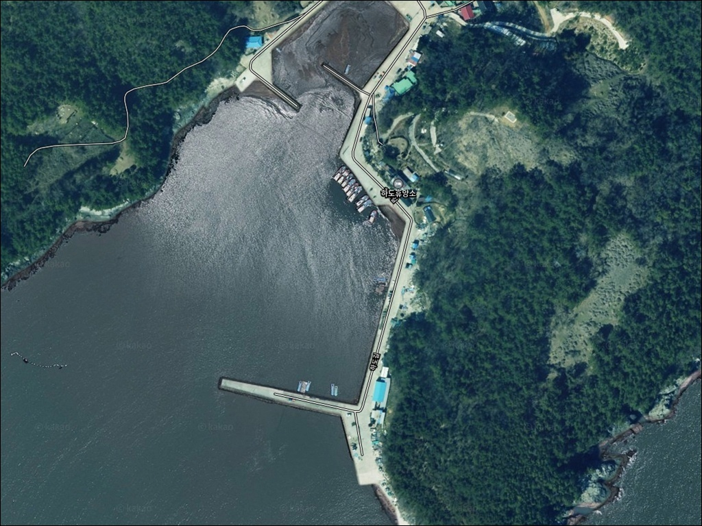
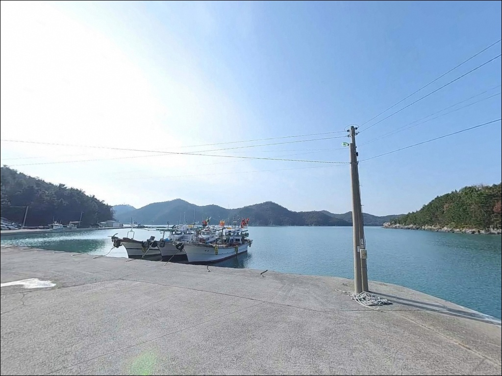
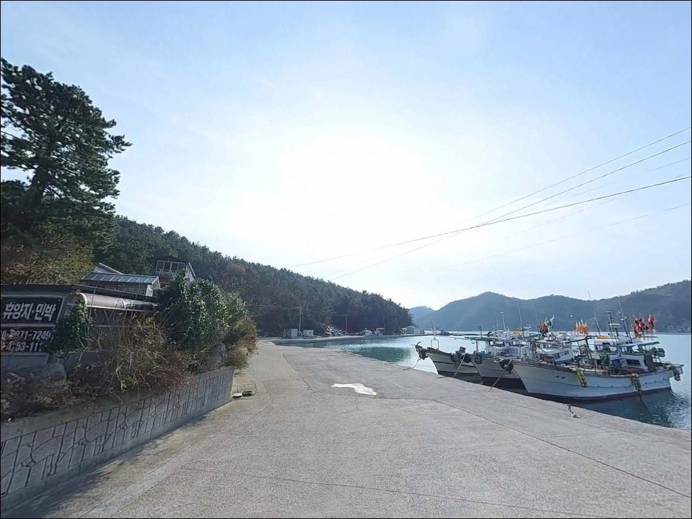
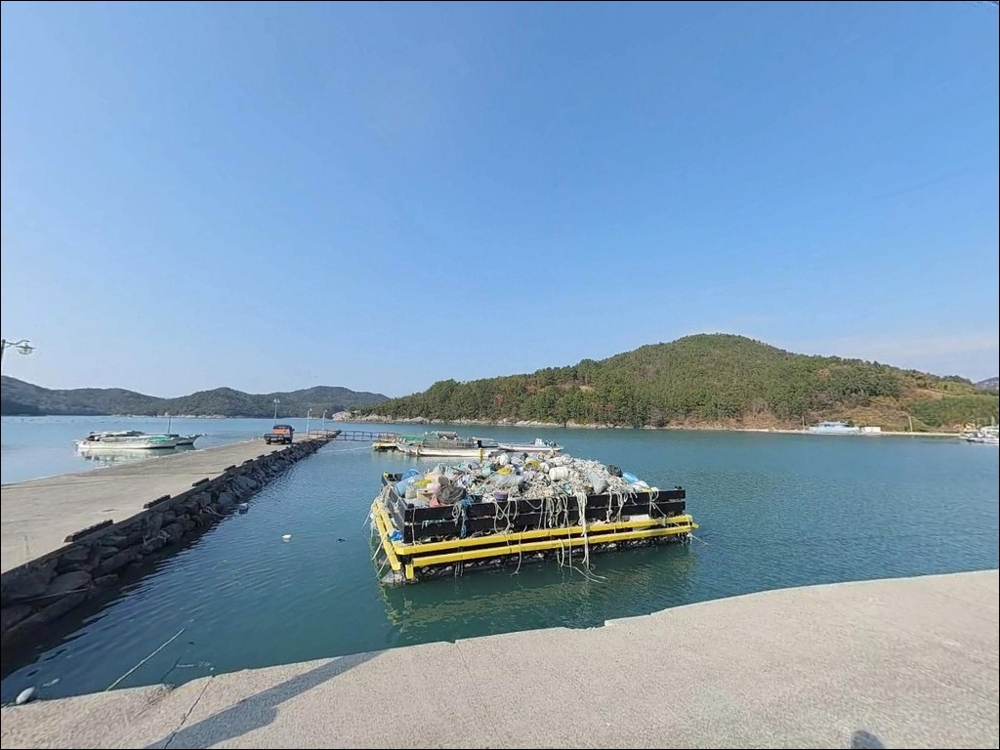
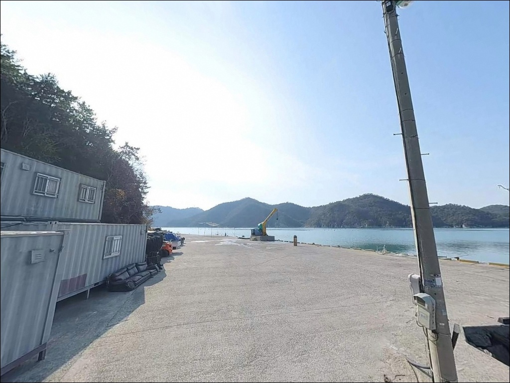
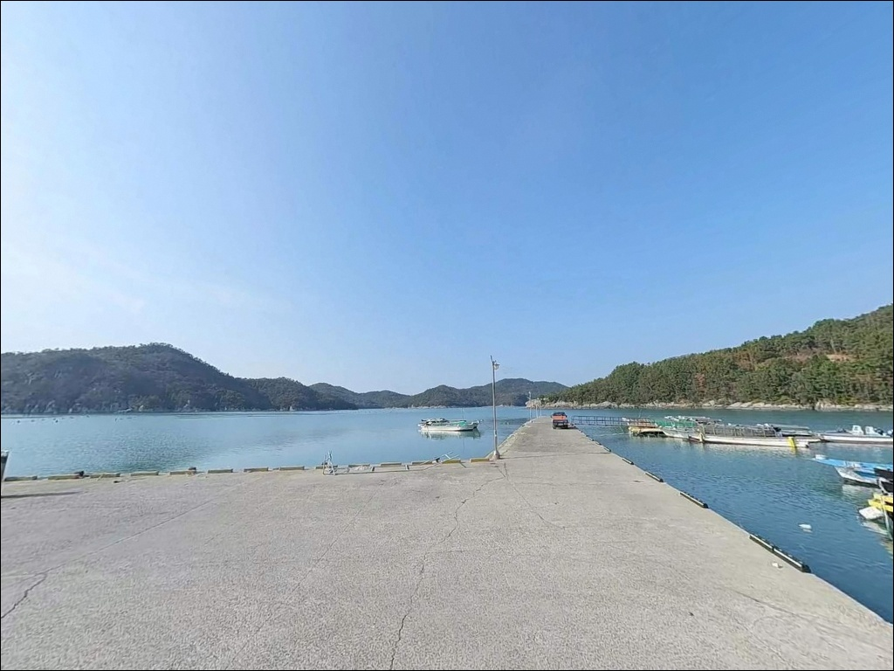
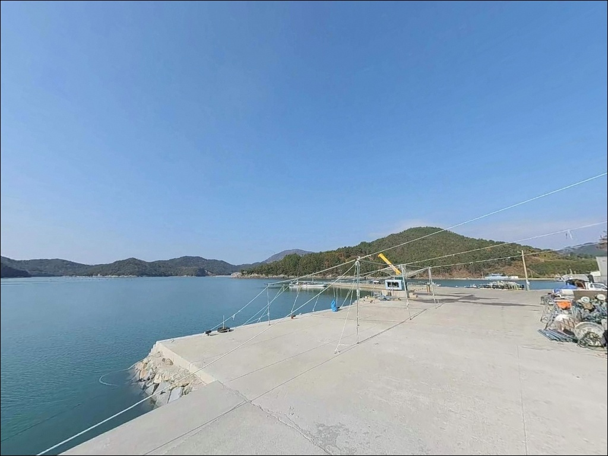
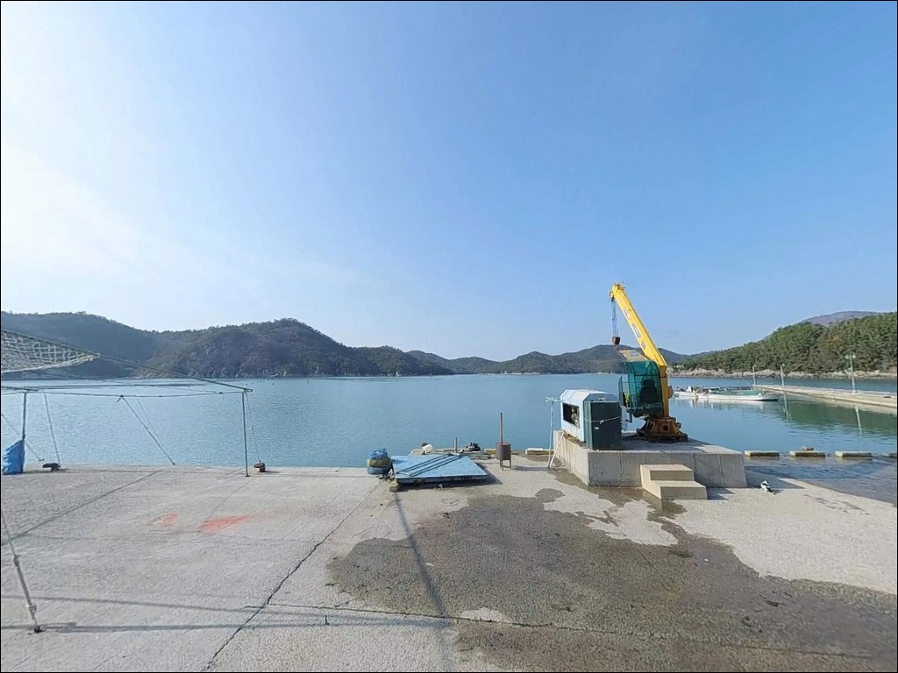
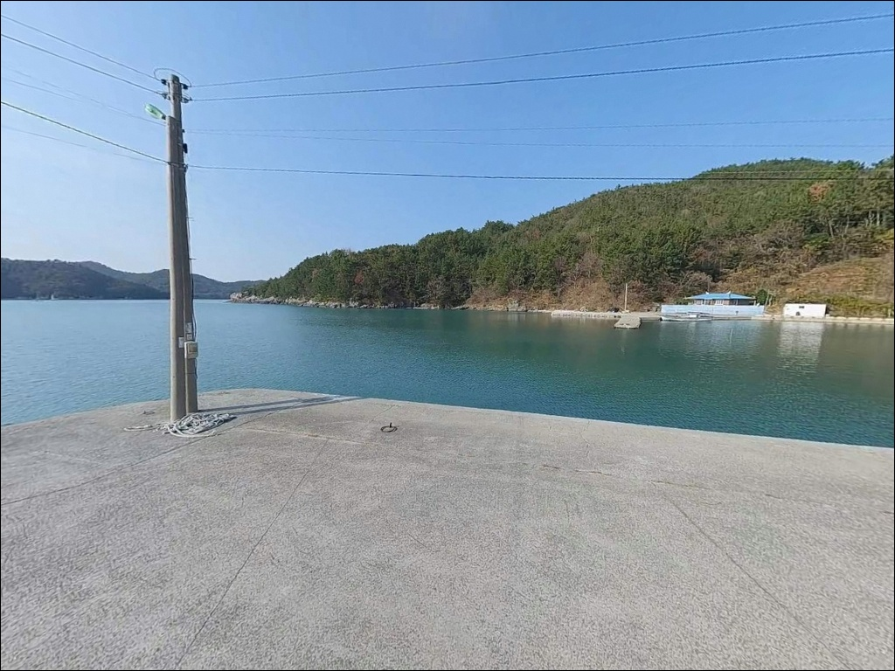

간조에 내항 바닥 드러나는 고흥 하도방파제, 만조 수심 5m 선단 원투낚시
이 페이지에는 광고(제휴 링크 포함)가 있으며, 광고 링크를 통해 구매하면 운영자가 판매 수익 또는 수수료를 받을 수 있습니다. 포인트 사진: 카카오맵 스카이뷰·로드뷰. 이 페이지의 지도·사진 이미지는 카카오맵의 실제 서비스 이미지와 다를 수 있습니다.


포인트 안내
하도방파제
전남 고흥군 도화면 사덕리 1180-6
고흥 도화면 남연안은
간조와 만조 수위 차가 큰 해역입니다.
물때 계산 없이 방문하면
내항 일부가 바닥을 드러내는 상황을
맞닥뜨릴 수 있어,
출조 전 물때 확인이 낚시 가능 시간을 결정하는
포인트입니다.
이 글은 하도방파제의
진입 동선, 차박 여건, 물때 판단 기준,
지형 기반 낚시 공략 조건에 집중합니다.
조황 단정이나 특정 어종 보장은
이 글의 범위에 포함되지 않습니다.

1. 진입 동선과 포인트 접근성
하도방파제는 도화면 사덕길을 따라
마을 안쪽으로 진입하는 구조입니다.
포장도로가 방파제 앞까지 이어지며
승용차 기준으로 진입 자체에 큰 어려움은 없습니다.
다만 막다른 길 형태로 방파제 앞에 이르는 구조이므로
회차 공간을 미리 파악하고 진입하는 것이 좋습니다.
소형 SUV나 일반 승용차라면
방파제 앞 공터에서 회차가 가능합니다.
대형 SUV나 캠핑카는 마을 진입 전에
위성지도로 도로 폭과 회차 가능 지점을
반드시 확인해야 합니다.
주차는 방파제 초입 공터와
선착장 주변 평지를 이용하는 방식이
일반적입니다.
소형 마을 방파제 특성상
2~5대 수준의 주차 공간이 확보되며,
어선 이동 동선을 막지 않는 자리가 우선입니다.

2. 차박 환경과 야간 체류 여건
하도방파제 일대는 반농 반어의 소규모 어촌 마을로
민가가 해안선 가까이 분포합니다.
야간 차량 통행은 많지 않지만
민가와 거리가 가깝기 때문에
프라이버시 확보를 위해 민가에서 약간 떨어진
도로변 정차 위치를 잡는 것이 좋습니다.
가로등은 방파제 진입로 인근에 설치되어 있어
야간에도 완전 암흑 상태는 아닙니다.
다만 방파제 선단까지는 조명이 미치지 않아
헤드랜턴을 반드시 지참해야 합니다.
외항이 남쪽 외해로 열린 구조이므로
남풍이 강한 날에는 바람 영향이 직접 들어오는 위치입니다.
주차 공간이 넉넉하지 않아
차박을 메인으로 삼기에는 제한이 있습니다.
낚시 후 짧게 머무는 단기 체류 목적이라면
방파제 인근 공터를 활용하는 방식이
현실적입니다.


3. 주변 편의시설 및 인프라 현황
하도방파제 현장에는
별도의 공공 편의시설이 없습니다.
식수, 얼음, 낚시 소품 모두
출발 전에 갖춰야 하며,
완전 자급 체제로 진입하는 것이
기본 준비 방식입니다.
도화면 중심지 방향으로
차량으로 10분 내외 이동하면
편의점과 식당 등 기본 인프라를
이용할 수 있습니다.
반경 3km 권역의 도화면 시내권이
사전 물품 보충의 기준 동선입니다.
응급 상황 발생 시
대형 의료기관은 고흥읍 방향으로
차량 30분 거리에 해당합니다.
비상약품과 음수는
출발 전 철저히 챙겨 두는 편이 좋습니다.

4. 진입 전 반드시 챙겨야 할 준비사항
하도방파제 방문 전 가장 먼저 확인할 것은
물때입니다.
고흥 도화면 남연안은 간조 시
수심이 크게 낮아지는 해역 특성을 가집니다.
내항 일부가 바닥을 드러낼 수 있어,
바다타임에서 사덕리 기준 물때를 확인하고
만조 전후를 중심으로 출발 시각을 맞추는 것이
기본 전략입니다.
외항이 남쪽 외해로 열린 구조이므로
남풍이나 남서풍이 강한 날에는
파고와 바람 영향이 직접 들어옵니다.
기상청 예보를 당일 아침에 다시 확인하고,
파고 1m 이상이 예보된 날에는
방파제 외항 쪽 출입을 자제하는 것이
안전한 판단입니다.
외항 석축과 방파제 선단은
이끼와 조류로 인한 미끄러짐이 발생합니다.
미끄럼 방지 기능이 있는 신발과 구명조끼는
방파제 낚시의 기본 장비입니다.
암초 혼합 지형 특성상 채비 손실이 잦으니
여분 채비는 넉넉하게 준비하는 편이 좋습니다.

5. 지형 기반 낚시 여건 분석
하도방파제의 핵심은
방파제 선단과 외항이 꺾이는 구간입니다.
외항은 남~남서 방향으로 열려 있어
조류가 선단부를 돌아 흐르는 구간이
자연스럽게 형성됩니다.
이 구간에서 수심 변화와 조류 집중이 동시에 발생해
낚시 자리로서의 조건이 만들어집니다.
수심은 방파제 초입보다 끝단으로 갈수록 깊어지는 구조이며,
만조 기준 외항 끝단에서 4~6m 수준입니다.
외항 쪽 바닥은 뻘과 암반이 혼합된 구조로
암초 경계선 주변에 어류의 은신처가 형성됩니다.
채비 운용 중 밑걸림이 발생하는 구간이 있으므로
봉돌 중량과 채비 운용 속도를 조절하는 것이
손실을 줄이는 방법입니다.
내항 쪽은 비교적 정온한 수역으로
바닥면이 평탄한 편입니다.
내항 입구 구간에는 물때에 따라
물골이 형성되어 조류 소통이 이루어집니다.
출조 전에 고흥 도화면 일대 최신 조황을
반드시 검색해 보시기 바랍니다.


6. 외항 구조에서 조과가 달라지는 낚시 방식 선택 기준
이 포인트에서 지형 조건과 가장 잘 맞는 낚시는
원투낚시입니다.
방파제 끝단에서 외항 정면으로
장거리 캐스팅하면
뻘과 암반이 교차하는 경계 구간을
공략할 수 있습니다.
만조 전후 1~2시간이 바닥층 어종을
노리기에 적합한 타이밍입니다.
에깅은 암반과 테트라포드 혼합 구조에서
두족류를 공략하기 좋은 방식입니다.
이 일대 고흥 남연안 해역은
갑오징어와 주꾸미가 서식하기 좋은
지형 조건을 갖추고 있으며,
해질녘부터 야간 타이밍이 핵심 시간대입니다.
루어낚시는 방파제 끝단과
테트라 인접 구간을 중심으로 운용합니다.
외항 직벽과 조류 흐름을 타고
회유성 어종이 지나는 길목을 노리는 방식으로,
메탈지그와 미노우 채비가
이 포인트 구조에 어울립니다.
내항 석축 측면이나 선착장 주변에서는
민장대를 활용한 생활낚시도 가능합니다.
내항 쪽은 외항보다 조류가 약해
가족 단위 낚시에 적합한 환경을 갖춥니다.

7. 대안 포인트와 플랜 B 동선
하도방파제 주차 여건이 맞지 않거나
물때가 불리한 상황이라면
발포항 방파제가 첫 번째 대안입니다.
하도방파제에서 차량으로 약 10분 거리이며
국가어항으로 지정된 포인트라
방파제 접안 공간과 낚시 여건이
더 안정적입니다.
발포항은 외항과 내항 구조가 갖춰져 있고
바다타임에 등재된 검증 포인트입니다.
이 일대 해역에서 감성돔, 볼락, 문어 등
다양한 낚시 방식을 운용할 수 있습니다.
처음 도화면을 방문하는 낚시인이라면
발포항을 기점으로 삼고
하도방파제를 병행 탐색하는 동선이
효율적입니다.
같은 도화면 연안의 지죽방파제도
대안으로 두기 좋은 포인트입니다.
방파제 정비가 완료된 공식 구조물로
도화면 남해 연안 생활형 낚시의
대표 포인트 중 하나입니다.
차박 여건이 하도방파제보다
여유로운 상황이라면
발포해수욕장 주변 주차 공간이
야간 체류의 대안 후보입니다.

방파제 구조를 읽으면
하도방파제가 달라 보입니다
원투낚시와 에깅을 즐기는 낚시인이라면
하도방파제의 외항 구조와 암반 혼합 지형은
충분히 탐색해볼 가치가 있습니다.
소형 마을 방파제이지만
끝단과 조류 꺾임 구간이
복수의 낚시 방식을 동시에 운용할 수 있는
조건을 갖추고 있습니다.
반면 물때 확인 없이 간조를 맞닥뜨리거나
남풍이 강한 날 외항에 자리를 잡으면
낚시 자체가 어려운 상황이 됩니다.
물때 확인, 기상 점검, 자급 준비,
이 세 가지를 갖추고 출발하면
발품이 아깝지 않은 포인트입니다.
차박 여건이 넉넉하지 않은 포인트이므로
낚시를 마치고 인근 발포해수욕장 쪽으로
이동해 하룻밤 머무는 동선이
낚시와 차박을 동시에 즐기기에
더 여유로운 선택입니다.